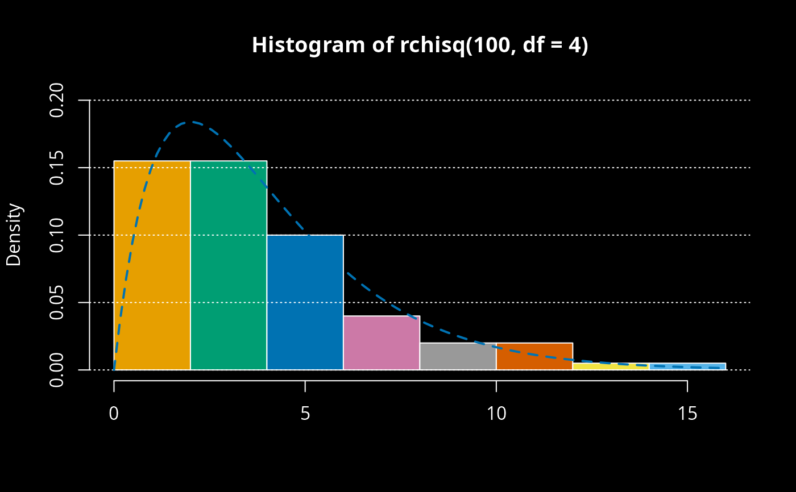
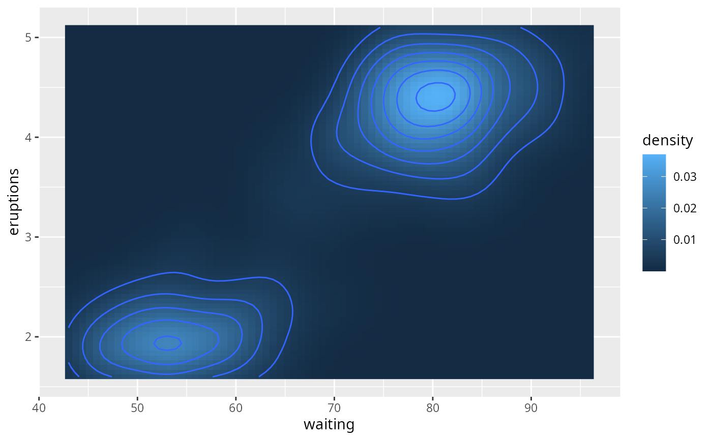
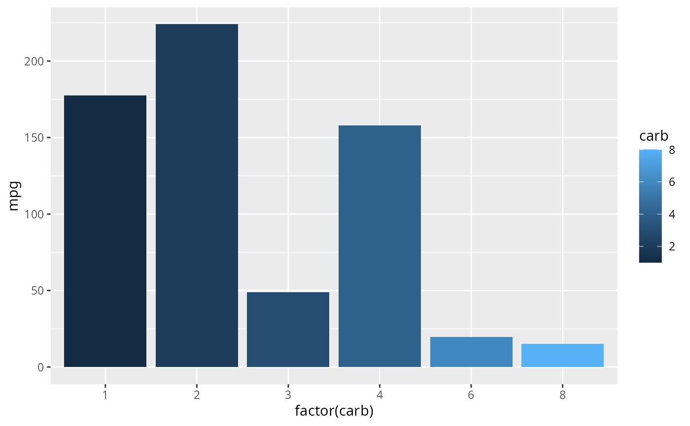
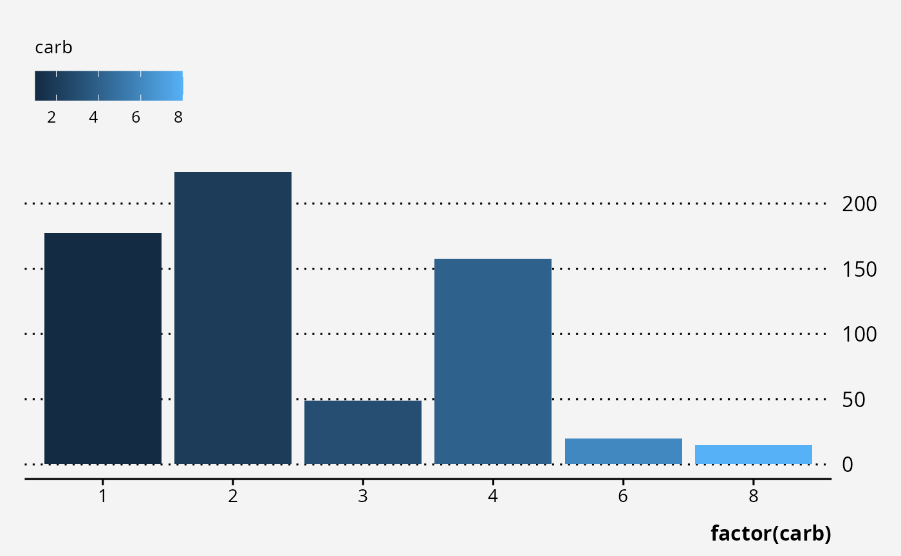
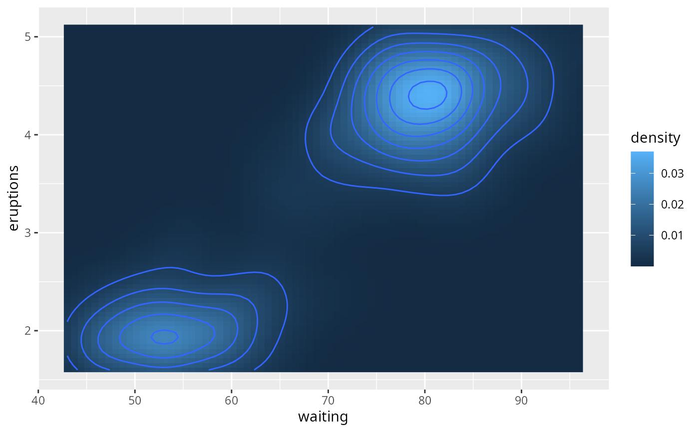
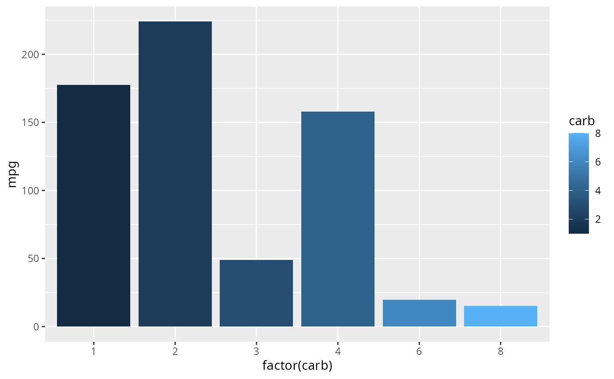
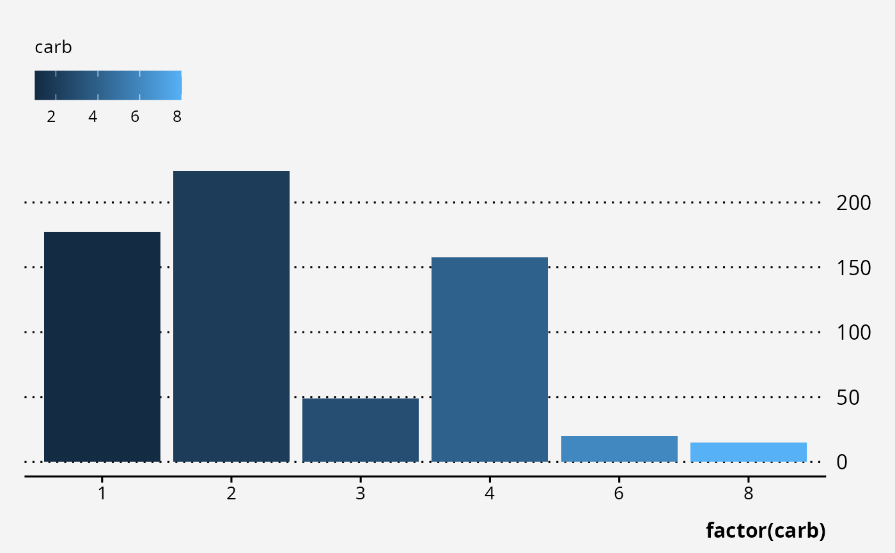

Applies Bootstrap branding to R graphics using thematic R package utilities. This function behaves like thematic::thematic_on() but instead of passing individual colors and fonts, the user can provide an external _brand.yml configuration file instead. brand_on take color and font variable names per Boostrap branding (hence, do not provide hex color codes, edit _brand.yml instead).
Arguments
- file
path to
_brand.ymlbrand configuration file, normally this file is auto-detected in the working tree, but may be specified here to swap branding dynamically- bg
a background color.
- fg
a foreground color.
- accent
a color for making certain graphical markers 'stand out' (e.g., the fitted line color for
ggplot2::geom_smooth()). Can be 2 colors for lattice (stroke vs fill accent).- font
a
font_spec()object. If missing, font defaults are not altered.- sequential
a color palette for graphical markers that encode numeric values. Can be a vector of color codes or a
sequential_gradient()object.- qualitative
a color palette for graphical markers that encode qualitative values (won't be used in ggplot2 when the number of data levels exceeds the max allowed colors). Defaults to
okabe_ito().- gradient
Vector of Bootstrap color (names) to use in plot gradients
- n
Number of colors to interpolate in plot gradients (default: 20)
- alpha
Transparency for color scales between 0 and 1 (default: .9)
Examples
#brand_on()
thematic::thematic_on("black", "white")
# base
hist(rchisq(100, df=4), freq=FALSE, ylim=c(0, 0.2),
col=1:11, border="white", xlab=NA)
#> Warning: thematic was unable to resolve `accent='auto'`. Try providing an actual color (or `NA`) to the `accent` argument of `thematic_on()`. By the way, 'auto' is only officially supported in `shiny::renderPlot()`, some rmarkdown scenarios (specifically, `html_document()` with `theme!=NULL`), in RStudio, or if `auto_config_set()` is used.
grid(NA, NULL, col="white")
curve(dchisq(x, df=4), col=3, lty=2, lwd=2, add=TRUE)

# lattice
lattice::show.settings()
 # ggplot2
require(ggplot2)
#> Loading required package: ggplot2
ggplot(mtcars, aes(factor(carb), mpg, fill=carb)) +
geom_col() +
labs(
x = "carb", y = NULL,
title = "Default Plot with Bootstrap Branding",
subtitle = "My very long subtitle with many units",
caption = "My very long plot caption with many references.")

#brand_on(fg="white", bg="purple", gradient=c("teal", "light", "dark"), alpha=1)
ggplot(mtcars, aes(factor(carb), mpg, fill=carb)) +
geom_col()

ggplot(mtcars, aes(factor(carb), mpg, fill=carb)) +
geom_col() +
guides(y=guide_axis(position="right")) +
theme_brand(base_bg="light")

# ggplot2
require(ggplot2)
#> Loading required package: ggplot2
ggplot(mtcars, aes(factor(carb), mpg, fill=carb)) +
geom_col() +
labs(
x = "carb", y = NULL,
title = "Default Plot with Bootstrap Branding",
subtitle = "My very long subtitle with many units",
caption = "My very long plot caption with many references.")

#brand_on(fg="white", bg="purple", gradient=c("teal", "light", "dark"), alpha=1)
ggplot(mtcars, aes(factor(carb), mpg, fill=carb)) +
geom_col()

ggplot(mtcars, aes(factor(carb), mpg, fill=carb)) +
geom_col() +
guides(y=guide_axis(position="right")) +
theme_brand(base_bg="light")
